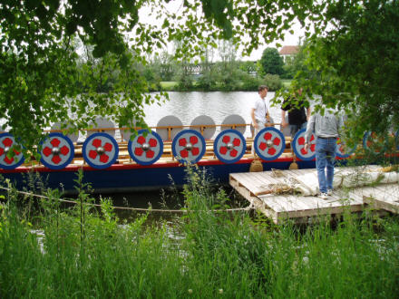

Post-Doctoral researcher

The roman warship project
There are other things out there than just astrophysics. Here I present a project where I and another astrophysisist collaborate with Prof. Schäfer (Department of History, Universität Hamburg 2005-2008; Department of History, Universität Trier 2008-present)

In this project we aim to obtain reliable numerical characteristics of Roman warships. Antique texts have revealed a large number of facts about the fleet the Roman empire possessed in the first centuries of the first millennium, but measured and proven numbers e.g. on the speed of these vessels are mostly unknown.
Therefore, two vessels were reconstructed in the original scale according to the archaeological excavations. Both original ships were uncovered along German rivers, the Rhine and Donau. In that time they were used to patrol the German border and protect the Roman empire against German invasions. The pictures above show the „Navis Lusoria“ build in 2004 mooring close the Regensburg on the Donau and in full sail during our measurements.
In 2005 we set out to test how long it needs to train a new team to handle the oars (about a week). In 2006 we joined the project as full collaborators, when we started to take data with automated equipment (wind direction and speed, GPS data and boat speed). Our astrophysical experience in handling large datasets and to analyse a time series greatly enhanced the scientific outcome of the experiment. We wrote a software in IDL to extract parameters to characterise the boat, such as the maximum speed and a polar diagram of boat speeds depending on the angle angle and the wind speed.
In 2007 another, older type, named „Oberstimm I“ after the place where the wreck was unearthed, was reconstructed in Hamburg, mostly by students and supported by two professional boat builders (Project home page in German www.roemerschiff.de).
The results are published in two books. I also prepared an extensive collection of maps for all recorded journeys and and some results here (in German). Further results and a documentation of the python software that I am developing to analyse the data will become availble at that website when the data analysis is finished.
contact:
Harvard-Smithsonian Center for Astrophysics
60 Garden Street
Cambridge
MA 02139
USA
+1 617-496-1821
hguenther(at)cfa.harvard.edu